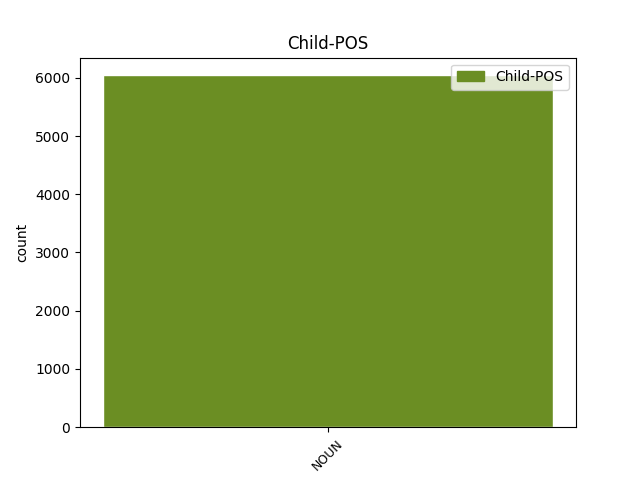

Distribution of features within this leaf

Agreement Rules sorted by frequency.
- When the dependent token is the conjunct(conj) of the head token, and the dependent token is NOUN.
1 Doch _ _ _ _ 0 _ _ _
2 kann _ _ _ _ 0 _ _ _
3 man _ _ _ _ 0 _ _ _
4 alle _ _ _ _ 0 _ _ _
5 diese _ _ _ _ 0 _ _ _
6 Formen _ _ _ _ 0 _ _ _
7 auf _ _ _ _ 0 _ _ _
8 das _ _ _ _ 0 _ _ _
9 Wort _ _ _ _ 0 _ _ _
10 dyaus _ _ _ _ 0 _ _ _
11 zurückführen _ _ _ _ 0 _ _ _
12 , _ _ _ _ 0 _ _ _
13 das _ _ _ _ 0 _ _ _
14 als _ _ _ _ 0 _ _ _
15 " _ _ _ _ 0 _ _ _
16 Erscheinung Erscheinung NOUN NN Case=Nom|Gender=Fem|Number=Sing 0 _ _ _
17 " _ _ _ _ 0 _ _ _
18 oder _ _ _ _ 0 _ _ _
19 " _ _ _ _ 0 _ _ _
20 Strahlung Strahlung NOUN NN Case=Nom|Gender=Fem|Number=Sing 16 conj _ SpaceAfter=No
21 " _ _ _ _ 0 _ _ _
22 aufgefasst _ _ _ _ 0 _ _ _
23 werden _ _ _ _ 0 _ _ _
24 kann _ _ _ _ 0 _ _ _
25 . _ _ _ _ 0 _ _ _
1 Die _ _ _ _ 0 _ _ _
2 fünfte _ _ _ _ 0 _ _ _
3 Single _ _ _ _ 0 _ _ _
4 , _ _ _ _ 0 _ _ _
5 die _ _ _ _ 0 _ _ _
6 Calling _ _ _ _ 0 _ _ _
7 You _ _ _ _ 0 _ _ _
8 ( _ _ _ _ 0 _ _ _
9 Remix _ _ _ _ 0 _ _ _
10 ) _ _ _ _ 0 _ _ _
11 heißt _ _ _ _ 0 _ _ _
12 , _ _ _ _ 0 _ _ _
13 gehörte _ _ _ _ 0 _ _ _
14 schon _ _ _ _ 0 _ _ _
15 zu _ _ _ _ 0 _ _ _
16 der _ _ _ _ 0 _ _ _
17 Premium Premium NOUN NN Case=Dat|Gender=Fem|Number=Sing 19 compound _ _
18 - _ _ _ _ 0 _ _ _
19 Edition Edition NOUN NN Case=Dat|Gender=Fem|Number=Sing 0 _ _ _
20 , _ _ _ _ 0 _ _ _
21 die _ _ _ _ 0 _ _ _
22 die _ _ _ _ 0 _ _ _
23 Band _ _ _ _ 0 _ _ _
24 2007 _ _ _ _ 0 _ _ _
25 unter _ _ _ _ 0 _ _ _
26 dem _ _ _ _ 0 _ _ _
27 Namen _ _ _ _ 0 _ _ _
28 Foiled _ _ _ _ 0 _ _ _
29 for _ _ _ _ 0 _ _ _
30 the _ _ _ _ 0 _ _ _
31 Last _ _ _ _ 0 _ _ _
32 Time _ _ _ _ 0 _ _ _
33 veröffentlichte _ _ _ _ 0 _ _ _
34 . _ _ _ _ 0 _ _ _
1 Gladwell _ _ _ _ 0 _ _ _
2 lenkt _ _ _ _ 0 _ _ _
3 den _ _ _ _ 0 _ _ _
4 Blick _ _ _ _ 0 _ _ _
5 auch _ _ _ _ 0 _ _ _
6 auf _ _ _ _ 0 _ _ _
7 scheinbare _ _ _ _ 0 _ _ _
8 Kleinigkeiten _ _ _ _ 0 _ _ _
9 , _ _ _ _ 0 _ _ _
10 zu _ _ _ _ 0 _ _ _
11 dem _ _ _ _ 0 _ _ _
12 Beispiel _ _ _ _ 0 _ _ _
13 die _ _ _ _ 0 _ _ _
14 Broken _ _ _ _ 0 _ _ _
15 - _ _ _ _ 0 _ _ _
16 Window Window PROPN NN Case=Nom|Gender=Fem|Number=Sing 0 _ _ _
17 - _ _ _ _ 0 _ _ _
18 Theorie Theorie NOUN NN Case=Nom|Gender=Fem|Number=Sing 16 flat _ SpaceAfter=No
19 , _ _ _ _ 0 _ _ _
20 die _ _ _ _ 0 _ _ _
21 ebenfalls _ _ _ _ 0 _ _ _
22 große _ _ _ _ 0 _ _ _
23 Bedeutung _ _ _ _ 0 _ _ _
24 haben _ _ _ _ 0 _ _ _
25 können _ _ _ _ 0 _ _ _
26 . _ _ _ _ 0 _ _ _
1 Das _ _ _ _ 0 _ _ _
2 letzte _ _ _ _ 0 _ _ _
3 planmäßige _ _ _ _ 0 _ _ _
4 überregionale _ _ _ _ 0 _ _ _
5 Güterzugpaar Güterzugpaar NOUN NN Case=Nom|Gender=Neut|Number=Sing 0 _ _ _
6 , _ _ _ _ 0 _ _ _
7 ein _ _ _ _ 0 _ _ _
8 Schnellgüterzug Schnellgüterzug NOUN NN Case=Nom|Gender=Masc|Number=Sing 5 appos _ _
9 ( _ _ _ _ 0 _ _ _
10 Sg _ _ _ _ 0 _ _ _
11 ) _ _ _ _ 0 _ _ _
12 Heidelberg _ _ _ _ 0 _ _ _
13 - _ _ _ _ 0 _ _ _
14 Würzburg _ _ _ _ 0 _ _ _
15 , _ _ _ _ 0 _ _ _
16 nutzte _ _ _ _ 0 _ _ _
17 die _ _ _ _ 0 _ _ _
18 Strecke _ _ _ _ 0 _ _ _
19 bis _ _ _ _ 0 _ _ _
20 Ende _ _ _ _ 0 _ _ _
21 der _ _ _ _ 0 _ _ _
22 1980er _ _ _ _ 0 _ _ _
23 Jahre _ _ _ _ 0 _ _ _
24 . _ _ _ _ 0 _ _ _
1 Synonym synonym NOUN NN Case=Nom|Gender=Neut|Number=Sing 16 unk _ SpaceAfter=No
2 : _ _ _ _ 0 _ _ _
3 Lithobates _ _ _ _ 0 _ _ _
4 catesbeianus _ _ _ _ 0 _ _ _
5 ) _ _ _ _ 0 _ _ _
6 , _ _ _ _ 0 _ _ _
7 genauer _ _ _ _ 0 _ _ _
8 : _ _ _ _ 0 _ _ _
9 Nordamerikanischer _ _ _ _ 0 _ _ _
10 Ochsenfrosch _ _ _ _ 0 _ _ _
11 , _ _ _ _ 0 _ _ _
12 ist _ _ _ _ 0 _ _ _
13 eine _ _ _ _ 0 _ _ _
14 ursprünglich _ _ _ _ 0 _ _ _
15 nordamerikanische _ _ _ _ 0 _ _ _
16 Amphibienart Amphibienart NOUN NN Case=Nom|Gender=Fem|Number=Sing 0 _ _ _
17 aus _ _ _ _ 0 _ _ _
18 der _ _ _ _ 0 _ _ _
19 Familie _ _ _ _ 0 _ _ _
20 der _ _ _ _ 0 _ _ _
21 Echten _ _ _ _ 0 _ _ _
22 Frösche _ _ _ _ 0 _ _ _
23 . _ _ _ _ 0 _ _ _
1 So _ _ _ _ 0 _ _ _
2 fanden _ _ _ _ 0 _ _ _
3 Artikel _ _ _ _ 0 _ _ _
4 und _ _ _ _ 0 _ _ _
5 Bücher _ _ _ _ 0 _ _ _
6 über _ _ _ _ 0 _ _ _
7 Reisen Reise|Reisen NOUN NN Case=Acc|Gender=Fem|Number=Plur 0 _ _ _
8 in _ _ _ _ 0 _ _ _
9 den _ _ _ _ 0 _ _ _
10 Orient _ _ _ _ 0 _ _ _
11 , _ _ _ _ 0 _ _ _
12 nach _ _ _ _ 0 _ _ _
13 Europa _ _ _ _ 0 _ _ _
14 und _ _ _ _ 0 _ _ _
15 in _ _ _ _ 0 _ _ _
16 andere _ _ _ _ 0 _ _ _
17 Gebiete _ _ _ _ 0 _ _ _
18 sowie _ _ _ _ 0 _ _ _
19 die _ _ _ _ 0 _ _ _
20 damit _ _ _ _ 0 _ _ _
21 verbundenen _ _ _ _ 0 _ _ _
22 Abenteuer Abenteuer NOUN NN Case=Acc|Gender=Neut|Number=Plur 7 comp:obj _ _
23 und _ _ _ _ 0 _ _ _
24 Gefahren _ _ _ _ 0 _ _ _
25 reichliche _ _ _ _ 0 _ _ _
26 öffentliche _ _ _ _ 0 _ _ _
27 Aufmerksamkeit _ _ _ _ 0 _ _ _
28 . _ _ _ _ 0 _ _ _
1 Vor _ _ _ _ 0 _ _ _
2 allem _ _ _ _ 0 _ _ _
3 der _ _ _ _ 0 _ _ _
4 Zentralrat _ _ _ _ 0 _ _ _
5 Deutscher _ _ _ _ 0 _ _ _
6 Sinti _ _ _ _ 0 _ _ _
7 und _ _ _ _ 0 _ _ _
8 Roma _ _ _ _ 0 _ _ _
9 habe _ _ _ _ 0 _ _ _
10 sich _ _ _ _ 0 _ _ _
11 , _ _ _ _ 0 _ _ _
12 so _ _ _ _ 0 _ _ _
13 Yaron Yaron PROPN NE Case=Nom|Gender=Masc|Number=Sing 0 _ _ _
14 Matras _ _ _ _ 0 _ _ _
15 , _ _ _ _ 0 _ _ _
16 der _ _ _ _ 0 _ _ _
17 damalige _ _ _ _ 0 _ _ _
18 Hauptverantwortliche Hauptverantwortliche NOUN NN Case=Nom|Gender=Masc|Number=Sing 13 subj _ _
19 für _ _ _ _ 0 _ _ _
20 die _ _ _ _ 0 _ _ _
21 Pressearbeit _ _ _ _ 0 _ _ _
22 sowie _ _ _ _ 0 _ _ _
23 für _ _ _ _ 0 _ _ _
24 Beziehungen _ _ _ _ 0 _ _ _
25 zu _ _ _ _ 0 _ _ _
26 internationalen _ _ _ _ 0 _ _ _
27 Organisationen _ _ _ _ 0 _ _ _
28 , _ _ _ _ 0 _ _ _
29 sich _ _ _ _ 0 _ _ _
30 dem _ _ _ _ 0 _ _ _
31 entschieden _ _ _ _ 0 _ _ _
32 entgegengestellt _ _ _ _ 0 _ _ _
33 . _ _ _ _ 0 _ _ _
1 Die _ _ _ _ 0 _ _ _
2 den _ _ _ _ 0 _ _ _
3 Wohngebäuden Wohngebäude NOUN NN Case=Dat|Gender=Neut|Number=Plur 5 comp:obl _ _
4 nahe _ _ _ _ 0 _ _ _
5 liegenden liegend ADJ ADJA Case=Dat|Gender=Neut|Number=Plur 0 _ _ _
6 Wirtschaftsgebäude _ _ _ _ 0 _ _ _
7 sind _ _ _ _ 0 _ _ _
8 gemauert _ _ _ _ 0 _ _ _
9 , _ _ _ _ 0 _ _ _
10 der _ _ _ _ 0 _ _ _
11 obere _ _ _ _ 0 _ _ _
12 Theil _ _ _ _ 0 _ _ _
13 aber _ _ _ _ 0 _ _ _
14 mit _ _ _ _ 0 _ _ _
15 Holz _ _ _ _ 0 _ _ _
16 gezimmert _ _ _ _ 0 _ _ _
17 , _ _ _ _ 0 _ _ _
18 und _ _ _ _ 0 _ _ _
19 mit _ _ _ _ 0 _ _ _
20 Stroh _ _ _ _ 0 _ _ _
21 eingedeckt _ _ _ _ 0 _ _ _
22 . _ _ _ _ 0 _ _ _
23 " _ _ _ _ 0 _ _ _
1 Ein _ _ _ _ 0 _ _ _
2 Tipp Tip NOUN NN Case=Nom|Gender=Masc|Number=Sing 0 _ _ _
3 für _ _ _ _ 0 _ _ _
4 alle _ _ _ _ 0 _ _ _
5 : _ _ _ _ 0 _ _ _
6 die _ _ _ _ 0 _ _ _
7 interessante _ _ _ _ 0 _ _ _
8 Fußgängerzone Fußgängerzone NOUN NN Case=Nom|Gender=Fem|Number=Sing 2 parataxis _ _
9 und _ _ _ _ 0 _ _ _
10 der _ _ _ _ 0 _ _ _
11 schöne _ _ _ _ 0 _ _ _
12 Wochenmarkt _ _ _ _ 0 _ _ _
13 ( _ _ _ _ 0 _ _ _
14 viele _ _ _ _ 0 _ _ _
15 Blumen _ _ _ _ 0 _ _ _
16 ) _ _ _ _ 0 _ _ _
17 . _ _ _ _ 0 _ _ _
1 Die _ _ _ _ 0 _ _ _
2 Anlage _ _ _ _ 0 _ _ _
3 in _ _ _ _ 0 _ _ _
4 Nähe _ _ _ _ 0 _ _ _
5 von _ _ _ _ 0 _ _ _
6 Amesbury _ _ _ _ 0 _ _ _
7 erhielt _ _ _ _ 0 _ _ _
8 den _ _ _ _ 0 _ _ _
9 Namen _ _ _ _ 0 _ _ _
10 " _ _ _ _ 0 _ _ _
11 Bluehenge _ _ _ _ 0 _ _ _
12 " _ _ _ _ 0 _ _ _
13 , _ _ _ _ 0 _ _ _
14 weil _ _ _ _ 0 _ _ _
15 sie _ _ _ _ 0 _ _ _
16 aus _ _ _ _ 0 _ _ _
17 27 _ _ _ _ 0 _ _ _
18 Blausteinen _ _ _ _ 0 _ _ _
19 ( _ _ _ _ 0 _ _ _
20 Dolerit _ _ _ _ 0 _ _ _
21 ) _ _ _ _ 0 _ _ _
22 bestand _ _ _ _ 0 _ _ _
23 , _ _ _ _ 0 _ _ _
24 die _ _ _ _ 0 _ _ _
25 wie _ _ _ _ 0 _ _ _
26 einige _ _ _ _ 0 _ _ _
27 Steine _ _ _ _ 0 _ _ _
28 in _ _ _ _ 0 _ _ _
29 dem _ _ _ _ 0 _ _ _
30 1,5 _ _ _ _ 0 _ _ _
31 km km NOUN NN Case=Dat|Gender=Neut|Number=Sing 32 udep _ _
32 entfernten entfernt ADJ ADJA Case=Dat|Gender=Neut|Number=Sing 0 _ _ _
33 Stonehenge _ _ _ _ 0 _ _ _
34 aus _ _ _ _ 0 _ _ _
35 den _ _ _ _ 0 _ _ _
36 Preseli _ _ _ _ 0 _ _ _
37 - _ _ _ _ 0 _ _ _
38 Bergen _ _ _ _ 0 _ _ _
39 in _ _ _ _ 0 _ _ _
40 dem _ _ _ _ 0 _ _ _
41 Südwesten _ _ _ _ 0 _ _ _
42 von _ _ _ _ 0 _ _ _
43 Wales _ _ _ _ 0 _ _ _
44 stammen _ _ _ _ 0 _ _ _
45 sollen _ _ _ _ 0 _ _ _
46 . _ _ _ _ 0 _ _ _
1 Unweit _ _ _ _ 0 _ _ _
2 der _ _ _ _ 0 _ _ _
3 Allee _ _ _ _ 0 _ _ _
4 befinden _ _ _ _ 0 _ _ _
5 sich _ _ _ _ 0 _ _ _
6 das _ _ _ _ 0 _ _ _
7 1897 _ _ _ _ 0 _ _ _
8 errichtete _ _ _ _ 0 _ _ _
9 Riesenrad Riesenrad NOUN NN Case=Nom|Gender=Neut|Number=Sing 0 _ _ _
10 und _ _ _ _ 0 _ _ _
11 das _ _ _ _ 0 _ _ _
12 1964 _ _ _ _ 0 _ _ _
13 eröffnete _ _ _ _ 0 _ _ _
14 Planetarium Planetarium NOUN NN Case=Nom|Gender=Neut|Number=Sing 9 subj@pass _ _
15 der _ _ _ _ 0 _ _ _
16 Stadt _ _ _ _ 0 _ _ _
17 Wien _ _ _ _ 0 _ _ _
18 . _ _ _ _ 0 _ _ _
1 Der _ _ _ _ 0 _ _ _
2 Rauch _ _ _ _ 0 _ _ _
3 wird _ _ _ _ 0 _ _ _
4 zunächst _ _ _ _ 0 _ _ _
5 durch _ _ _ _ 0 _ _ _
6 ein _ _ _ _ 0 _ _ _
7 Bowl Bowl NOUN NN Case=Acc|Gender=Neut|Number=Sing 8 comp:pred _ _
8 genanntes genannt ADJ ADJA Case=Acc|Gender=Neut|Number=Sing 0 _ _ _
9 , _ _ _ _ 0 _ _ _
10 mit _ _ _ _ 0 _ _ _
11 Wasser _ _ _ _ 0 _ _ _
12 gefülltes _ _ _ _ 0 _ _ _
13 Gefäß _ _ _ _ 0 _ _ _
14 gezogen _ _ _ _ 0 _ _ _
15 . _ _ _ _ 0 _ _ _
Disagree Examples:
1 Achtung _ _ _ _ 0 _ _ _
2 da _ _ _ _ 0 _ _ _
3 macht _ _ _ _ 0 _ _ _
4 wohl _ _ _ _ 0 _ _ _
5 jemand _ _ _ _ 0 _ _ _
6 auf _ _ _ _ 0 _ _ _
7 die _ _ _ _ 0 _ _ _
8 Kosten _ _ _ _ 0 _ _ _
9 der _ _ _ _ 0 _ _ _
10 Patienten _ _ _ _ 0 _ _ _
11 seine _ _ _ _ 0 _ _ _
12 ganz _ _ _ _ 0 _ _ _
13 eigene _ _ _ _ 0 _ _ _
14 Politik Politik NOUN NN Case=Acc|Gender=Fem|Number=Sing 0 _ _ _
15 oder _ _ _ _ 0 _ _ _
16 besser _ _ _ _ 0 _ _ _
17 gesagt _ _ _ _ 0 _ _ _
18 Show Show NOUN NN Case=Nom|Gender=Fem|Number=Sing 14 conj _ SpaceAfter=No
19 ! _ _ _ _ 0 _ _ _
20 ! _ _ _ _ 0 _ _ _
1 So _ _ _ _ 0 _ _ _
2 profitiert _ _ _ _ 0 _ _ _
3 nicht _ _ _ _ 0 _ _ _
4 nur _ _ _ _ 0 _ _ _
5 die _ _ _ _ 0 _ _ _
6 Agentur _ _ _ _ 0 _ _ _
7 , _ _ _ _ 0 _ _ _
8 sondern _ _ _ _ 0 _ _ _
9 in _ _ _ _ 0 _ _ _
10 erster _ _ _ _ 0 _ _ _
11 Linie Linie NOUN NN Case=Dat|Gender=Fem|Number=Sing 0 _ _ _
12 der _ _ _ _ 0 _ _ _
13 Kunde Kunde NOUN NN Case=Gen|Gender=Masc|Number=Plur 11 conj _ SpaceAfter=No
14 . _ _ _ _ 0 _ _ _
1 War _ _ _ _ 0 _ _ _
2 jetzt _ _ _ _ 0 _ _ _
3 in _ _ _ _ 0 _ _ _
4 fast _ _ _ _ 0 _ _ _
5 allen _ _ _ _ 0 _ _ _
6 Tabledance Tabledance PROPN NN Case=Dat|Gender=Neut|Number=Plur 0 _ _ _
7 Clubs Club NOUN NE Case=Gen|Gender=Masc|Number=Sing 6 flat _ _
8 in _ _ _ _ 0 _ _ _
9 München _ _ _ _ 0 _ _ _
10 wobei _ _ _ _ 0 _ _ _
11 ich _ _ _ _ 0 _ _ _
12 sagen _ _ _ _ 0 _ _ _
13 muss _ _ _ _ 0 _ _ _
14 , _ _ _ _ 0 _ _ _
15 dass _ _ _ _ 0 _ _ _
16 der _ _ _ _ 0 _ _ _
17 neu _ _ _ _ 0 _ _ _
18 eröffnete _ _ _ _ 0 _ _ _
19 Laden _ _ _ _ 0 _ _ _
20 Blackboxxx _ _ _ _ 0 _ _ _
21 für _ _ _ _ 0 _ _ _
22 Männer _ _ _ _ 0 _ _ _
23 der _ _ _ _ 0 _ _ _
24 mit _ _ _ _ 0 _ _ _
25 Abstand _ _ _ _ 0 _ _ _
26 beste _ _ _ _ 0 _ _ _
27 Laden _ _ _ _ 0 _ _ _
28 ist _ _ _ _ 0 _ _ _
29 . _ _ _ _ 0 _ _ _
1 Sollte _ _ _ _ 0 _ _ _
2 man _ _ _ _ 0 _ _ _
3 was _ _ _ _ 0 _ _ _
4 üer üer ADP PPER Case=Dat|Number=Sing|Person=2|PronType=Prs 0 _ _ _
5 die _ _ _ _ 0 _ _ _
6 Navigation Navigation NOUN NN Case=Acc|Gender=Fem|Number=Sing 4 comp:obj _ _
7 nicht _ _ _ _ 0 _ _ _
8 finden _ _ _ _ 0 _ _ _
9 , _ _ _ _ 0 _ _ _
10 so _ _ _ _ 0 _ _ _
11 läßt _ _ _ _ 0 _ _ _
12 sich _ _ _ _ 0 _ _ _
13 ein _ _ _ _ 0 _ _ _
14 bestimmtes _ _ _ _ 0 _ _ _
15 Bankprodukt _ _ _ _ 0 _ _ _
16 oder _ _ _ _ 0 _ _ _
17 Information _ _ _ _ 0 _ _ _
18 schnell _ _ _ _ 0 _ _ _
19 über _ _ _ _ 0 _ _ _
20 die _ _ _ _ 0 _ _ _
21 Suchfunktion _ _ _ _ 0 _ _ _
22 finden _ _ _ _ 0 _ _ _
23 . _ _ _ _ 0 _ _ _
1 Wie _ _ _ _ 0 _ _ _
2 sich _ _ _ _ 0 _ _ _
3 so _ _ _ _ 0 _ _ _
4 eine _ _ _ _ 0 _ _ _
5 Unterkunft _ _ _ _ 0 _ _ _
6 als _ _ _ _ 0 _ _ _
7 3 _ _ _ _ 0 _ _ _
8 Sterne Stern NOUN NN Case=Nom|Gender=Masc|Number=Plur 9 compound _ _
9 Unterkunft Unterkunft NOUN NN Case=Dat|Gender=Fem|Number=Sing 0 _ _ _
10 bezeichnen _ _ _ _ 0 _ _ _
11 darf _ _ _ _ 0 _ _ _
12 ist _ _ _ _ 0 _ _ _
13 mir _ _ _ _ 0 _ _ _
14 ein _ _ _ _ 0 _ _ _
15 Rätsel _ _ _ _ 0 _ _ _
16 . _ _ _ _ 0 _ _ _